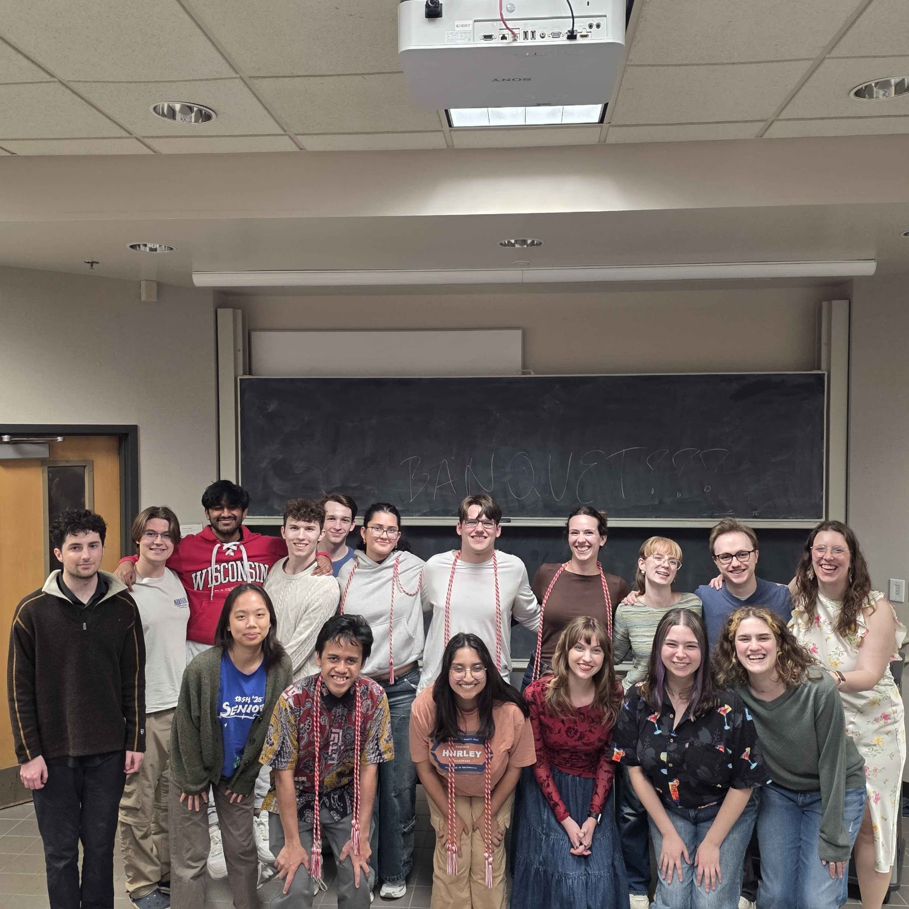
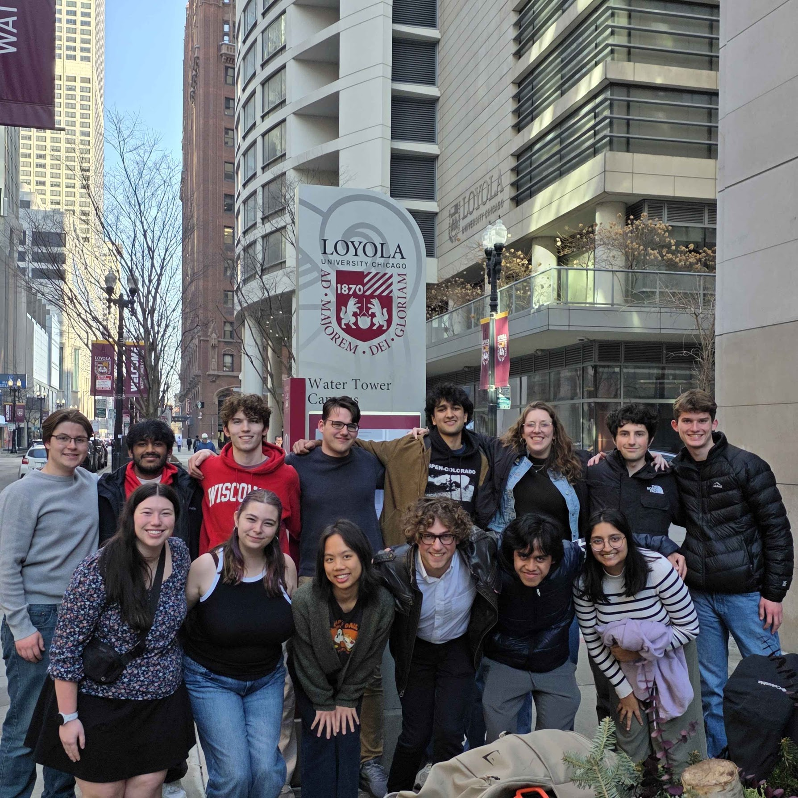
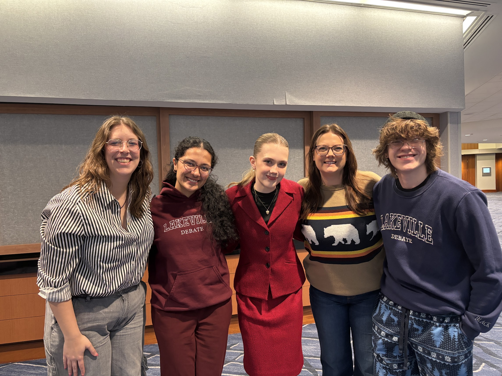
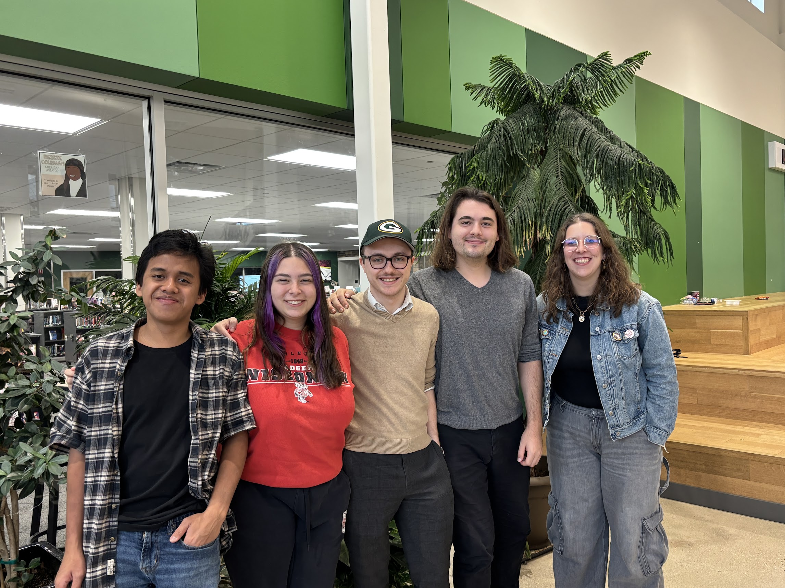
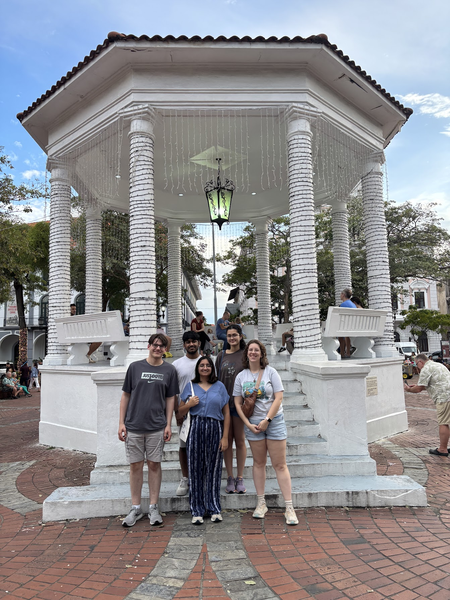
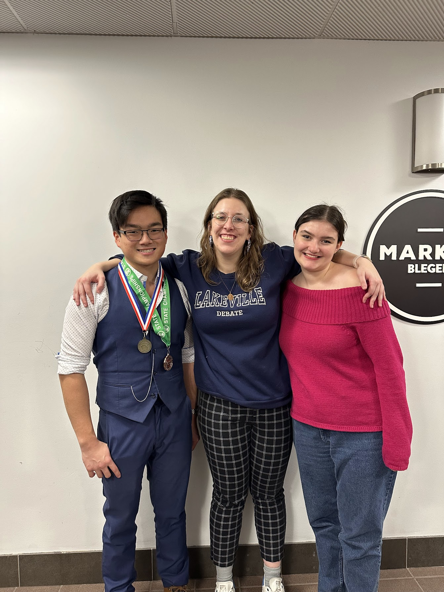

Service
Speech and Debate
Since 2012, I has been involved in academic debate as a debater, judge, volunteer, and coach. Debate deeply shaped me as an intellectual, a friend, a leader, and a fighter. I deeply believe in the capacity for activities like speech and debate to make a meaningful difference in the lives of young people. As such, I continue to give back to the community to help students like me find their voice.
Current Role
Head Coach, Wisconsin Speech and Debate Society. 2026-
Categories: WUDC British Parlimentary, AFA-NST Events
Past Roles
Assistant Debate Coach, Wisconsin Speech and Debate Society. (2024-2026)
Categories: WUDC British Parlimentary
Assistant Debate Coach, Lakeville Debate Team. Lakeville, Minnesota (2023-2024)
Categories: NSDA Congressional, Big Questions, World Schools
Judging Experience:
Debate Categories: NSDA events, WUDC British Parlimentary, APPE Ethics Bowl
Speech Categories: AFA-NST Events
Selected Tournaments: MSHSL State, NCFL, NSDA, TOC, Wisconsin State, WUDC






Academic Roles
President, Rhetoric Society of America UW-Madison Chapter (2026-2027)
Vice President (2025-2026)
Graduate Student Representative, Robert F. and Jean E. Holtz Center for Science and Technology Studies Steering Committee (2026-2028)
Graduate Student Representative, Communication Arts Graduate Student Organization (2025-2027)